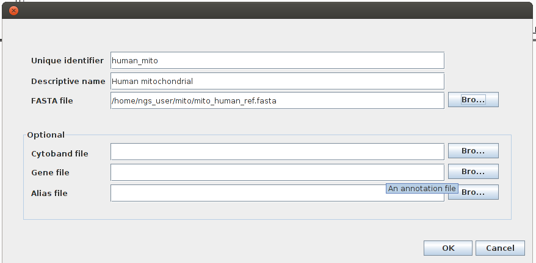
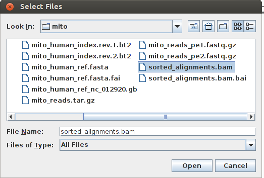
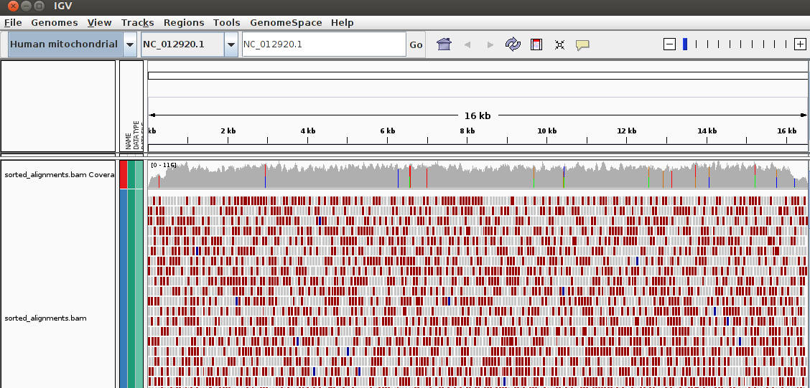

Mapping¶
Assembly versus mapping¶
Once we have a collection of reads there are two different kinds of analyses. If we do not have any previous genomic information we would have to assemble the reads into a genome or transcriptome, as we have already seen in the assembly section. Alternatively, if we had genome already available we could map our reads against that genome. Although both analyses could seem to be similar they are very different. To assemble a genome is computationally much costly than to do a mapping. Assembling the human genome was a difficult task, re-sequencing and mapping the reads from a new individual is much more amenable.
The main computational difference is that the typical software used to assemble requires a time that depends on the total reads length squared or the genome length squared (or quite a lot of memory) while the mapping is just lineal with the reads length. For a review take a look at Sense from sequence reads, but the take home message is that the assembly is time and memory consuming while the mapping can be done in standard computer.
Also, it is important to notice that the read length is a critical parameter for the assemblies, but this is not the case for the mapping. We can map short reads with ease and high accuracy in most cases. Palmieri and Schlötterer reviewed this aspect in 2009.
Mapping¶
The mapping is the process of comparing each one of the reads with the reference genome. We will obtain one alignment, or more, between each read and the genome.
{kind=link}
Like for any other bioinformatic task there is a lot of mapping software available. The most commonly used programs are bowtie2 and bwa. These tools differ on the algorithm used, the sensitivity, the memory requirements, the speed, and the sequence length requirements.
Seqanswers keep a comprehensive list of mappers. In Next generation sequencing has lower sequence coverage and poorer SNP-detection capability in the regulatory regions the authors review some of these programs.
SAM format¶
In general all mappers render the result in a common file format, the SAM format. This format is not meant for human consumption, although we can open the text version of the file. There is a growing collection of software created for dealing with these files. We can merge, sort, filter, realign and browse them. Some useful programs are:
Also the most common SNP callers would require a SAM file to work.
We can encounter SAM files in two flavors: SAM and BAM. The BAM is the binary version and the SAM is just the equivalent text file. They hold exactly the same information and we can convert between them with samtools. These files are composed of two parts, a header in which the sequences used as references are named and the alignment section in which the alignments for all reads are shown. The read groups are defined also in the header. A read group is a collection of reads that share some characteristics like:
Sample. Name of the individual sequenced.
Library.
Platform. Technology used (454, Sanger, Illumina, Solid)
SAM realignment¶
The mapping is done read by read (pairwise instead of multiple alignment), so the alignment obtained could present some artifacts. There are a couple of ways to avoid these artifacts. One is to inspect the alignment in order to realign the regions with problems to fix them. Another is to mark those problematic regions in order to avoid calling SNPs in there.
The GATK software has an option to realign a BAM file generating a new one with these problems solved. It would be specially advisable running this analysis, specially if we are going to take into account the small indels.
reference CAATC realignment CAATC
read1 CA-TC ----> CA-TC
read2 C-ATC CA-TC
samtools has the option (calmd) to calculate a probability for each position in the BAM file of having alignment artifacts. samtools calculates a probability for each position of being incorrectly aligned. The results is a Phred-scaled probability called Base Alignment Quality (BAQ). This BAQ can be combined with the sequencing quality to obtain the probability for each position of being a sequening error or a misalignment.
Duplicated reads¶
The reads that originate from the same original template are considered duplicated, as we already discussed in the read cleaning section. These duplicated reads align exactly at the same position on the reference genome because their sequence starts exactly at the same point.
If we ignored the sequencing errors the duplicated reads should had exactly the same sequence, but there will be errors. One way to detect them is to look for sequences that are almost identical (the differences being to the sequencing errors) and that align exactly in the 5’ end. If we had pair ends both the forward and the reverse sequencing would had to match and they would be detected more easily. This detection of duplicates is eased once we have all reads mapped to the reference, so in practice unless we’re assembling it tends to be carried out on the BAM files. The algorithms try to look for reads that map exactly in the same reference location.
Both samtools and picard have utilities to remove or mark those reads from the BAM files. It is a usual practice to locate all the duplicates and then to keep only one read from them, the one with the best quality. From the picard wiki:
Q: How does MarkDuplicates work? A: Essentially what it does (for pairs; single-end data is also handled) is to find the 5’ coordinates and mapping orientations of each read pair. When doing this it takes into account all clipping that has taking place as well as any gaps or jumps in the alignment. You can thus think of it as determining “if all the bases from the read were aligned, where would the 5’ most base have been aligned”. It then matches all read pairs that have identical 5’ coordinates and orientations and marks as duplicates all but the “best” pair. “Best” is defined as the read pair having the highest sum of base qualities as bases with Q >= 15.
Another software capable of looking for duplicates is samblaster.
Practical tasks¶
Mapping Pipeline¶
Index the reference secuence. Each reference/genome only needs to be indexed once for each mapper. Each mapper has it own command to index the reference.
Map the reads. Usually the mappers return a file in sam format.
If the output of the mapper is a sam, convert it to bam.
Sort the bam
Index the bam
Read mapping with bowtie2¶
1. Align the reads to the brca sequence with Bowtie2 creating a directory named brca.
(Take a look at the Bowtie2 manual first).
The first thing to do is to create the index. In a new terminal execute:
ngs_user@machine:~$ cd brca/
ngs_user@machine:~/brca$ pwd
/home/ngs_user/brca
ngs_user@machine:~/brca$ ls
brca.fasta brca_reads.fastq
ngs_user@machine:~/brca$ bowtie2-build brca.fasta brca_index
(...)
Total time for backward call to driver() for mirror index: 00:00:02
ngs_user@ngsmachine:~/brca$ ls
brca.fasta brca_index.1.bt2 brca_index.3.bt2 brca_index.rev.1.bt2
brca_index.2.bt2 brca_index.4.bt2 brca_index.rev.2.bt2 brca_reads.fasta
Now we can align the reads to the brca sequence (our reference) with Bowtie2:
ngs_user@machine:~/brca$ bowtie2 --sensitive -x brca_index -U brca_reads.fastq -S bowtie2_alignment.sam
6 reads; of these:
6 (100.00%) were unpaired; of these:
0 (0.00%) aligned 0 times
5 (83.33%) aligned exactly 1 time
1 (16.67%) aligned >1 times
100.00% overall alignment rate
How many reads got aligned?
Do we get anything different if we add the -a parameter?
ngs_user@machine:~/brca$ bowtie2 --sensitive -a -x brca_index -U brca_reads.fastq -S bowtie2_alignment2.sam
Create BAM files from the SAM files generated by Bowtie2.
To convert between the text (SAM) and binary (BAM) files we can use samtools:
ngs_user@machine:~/brca$ samtools view -hb -o bowtie2_alignment.bam -S bowtie2_alignment.sam
[samopen] SAM header is present: 1 sequences.
Sort the alignments in the BAM file according to its chromosomal location and also index it.
The sorting and indexing of the BAM files are required by a lot of tools that use the BAM files. Both tasks can be accomplished with samtools:
ngs_user@machine:~/brca$ samtools sort bowtie2_alignment.bam -o bowtie2_alignment.sorted.bam
ngs_user@machine:~/brca$ samtools index bowtie2_alignment.sorted.bam
Now we could view the BAM file IGV
Read mapping with bowtie2¶
Map these reads against this reference and view the result with igv.
Index the reference:
$ bowtie2-build genomic.fasta index
Total time for backward call to driver() for mirror index: 00:00:02
Map the reads and create a SAM file:
$ bowtie2 --sensitive -a -x index -f reads.fasta -S alignment.sam
9 reads; of these:
9 (100.00%) were unpaired; of these:
2 (22.22%) aligned 0 times
7 (77.78%) aligned exactly 1 time
0 (0.00%) aligned >1 times
77.78% overall alignment rate
How many sequences have been mapped?
Create a sorted BAM to be able to use igv.
$ samtools view -hb -o alignment.bam -S alignment.sam
[samopen] SAM header is present: 1 sequences.
$ samtools sort alignment.bam -o alignment.sorted.bam
$ samtools index alignment.sorted.bam
Map 454 reads¶
Download some 454 reads with its corresponding reference and map them using bwa mem.
First we create a directory to do the practice and uncompress the reads in it:
ngs_user@machine:~$ cd
ngs_user@machine:~$ mkdir 454
ngs_user@machine:~$ cd 454/
ngs_user@machine:~/454$ ls
maize_454.tar.gz
ngs_user@machine:~/454$ tar -xvzf maize_454.tar.gz
maize_454/maize_unigene_ref.fasta
maize_454/root.454.fastq
maize_454/
We have to index the reference:
ngs_user@machine:~/454$ bwa index -p reference -a bwtsw maize_454/maize_unigene_ref.fasta
[bwa_index] Pack FASTA... 0.03 sec
[bwa_index] Construct BWT for the packed sequence...
[BWTIncCreate] textLength=614110, availableWord=780628
(...)
ngs_user@machine:~/454$ ls
maize_454 reference.amb reference.bwt reference.sa
maize_454.tar.gz reference.ann reference.pac
Now we can map the reads against the reference using the mem algorithm:
ngs_user@machine:~/454$ bwa mem reference maize_454/root.454.fastq > mapped_res.sam
[bsw2_aln] read 4888 sequences/pairs (1034913 bp) ...
[main] Version: 0.7.2-r351
[main] CMD: bwa mem reference maize_454/root.454.fastq
[main] Real time: 8.019 sec; CPU: 6.148 sec
Map Illumina reads against the human mithocondrial reference¶
Map the Yoruba reads to the human mithocondrial reference using bowtie2.
First we prepare the directory and we download the reference and the reads.
ngs_user@machine:~$ cd
ngs_user@machine:~$ pwd
/home/ngs_user
ngs_user@machine:~$ mkdir mito
ngs_user@machine:~$ cd mito/
ngs_user@machine:~/mito$ ls
mito_human_ref_nc_012920.gb mito_reads.tar.gz
The reference is in genbank format. To index it we have to transform it to fasta format. We can do it with convert_format included in the seq_crumbs package:
ngs_user@machine:~/mito$ convert_format -f fasta mito_human_ref_nc_012920.gb -o mito_human_ref.fasta
Now we can index the mithocondrial genome:
ngs_user@machine:~/mito$ bowtie2-build mito_human_ref.fasta mito_human_index
Input files DNA, FASTA:
mito_human_ref.fasta
Reading reference sizes
Time reading reference sizes: 00:00:00
Calculating joined length
Writing header
Reserving space for joined string
The reads to be mapped are contained in a compressed file.
ngs_user@machine:~/mito$ tar -xvzf mito_reads.tar.gz
mito_reads_pe1.fastq.gz
mito_reads_pe2.fastq.gz
Now we can align the reads to the reference creating a SAM file in the process. To do it we have to take some details into consideration. The read files are compressed with gzip, but that is fine because bowtie2 can deal with compressed files and it saves a lot of disk space. We have paired reads and we have to inform bowtie2 that both read files are not independent, but that they are paired. We do it using the options -1 and -2. We also can set one of the presets like –very-fast, –sensitive or –very-sensitive-local. We could do the alignment with the very-fast setting.
ngs_user@machine:~/mito$ bowtie2 --very-fast -x mito_human_index -1 mito_reads_pe1.fastq.gz -2 mito_reads_pe2.fastq.gz -S aligned_reads.sam
10000 reads; of these:
10000 (100.00%) were paired; of these:
5101 (51.01%) aligned concordantly 0 times
4899 (48.99%) aligned concordantly exactly 1 time
0 (0.00%) aligned concordantly >1 times
----
5101 pairs aligned concordantly 0 times; of these:
4581 (89.81%) aligned discordantly 1 time
----
520 pairs aligned 0 times concordantly or discordantly; of these:
1040 mates make up the pairs; of these:
737 (70.87%) aligned 0 times
303 (29.13%) aligned exactly 1 time
0 (0.00%) aligned >1 times
96.31% overall alignment rate
Were most of the reads mapped to the reference? Would it be any difference if we were to use the most sensible preset setting: –very-sensitive-local?
ngs_user@machine:~/mito$ bowtie2 --very-sensitive-local -x mito_human_index -1 mito_reads_pe1.fastq.gz -2 mito_reads_pe2.fastq.gz -S aligned_reads.sam
10000 reads; of these:
10000 (100.00%) were paired; of these:
4966 (49.66%) aligned concordantly 0 times
5034 (50.34%) aligned concordantly exactly 1 time
0 (0.00%) aligned concordantly >1 times
----
4966 pairs aligned concordantly 0 times; of these:
4905 (98.77%) aligned discordantly 1 time
----
61 pairs aligned 0 times concordantly or discordantly; of these:
122 mates make up the pairs; of these:
62 (50.82%) aligned 0 times
60 (49.18%) aligned exactly 1 time
0 (0.00%) aligned >1 times
99.69% overall alignment rate
Why do you think this is happening?
Create a sorted and indexed BAM¶
Transform the SAM file obtained in the previous task into a sorted and indexed BAM file.
Most of the software that deals with SAM files require a sorted and indexed BAM file. We can transform from the text based SAM to the binary BAM using the samtools view command. When the SAM file is created by the mapper the reads are sorted just like in the fastq read input file, but for most applications the reads have to be sorted by their location in the reference genome. The index facilitates the access to the reads located at any random location of the reference genome. samtools also has commands to sort and index the BAM file. Another alternative would be to use Picard, a java-based samtools alternative, to do the indexing an sorting.
From SAM to BAM:
ngs_user@machine:~/mito$ pwd
/home/ngs_user/mito
ngs_user@machine:~/mito$ ls aligned_reads.sam
aligned_reads.sam
ngs_user@machine:~/mito$ samtools view -b -S -o aligned_reads.bam aligned_reads.sam
[samopen] SAM header is present: 1 sequences.
Sort and index:
ngs_user@machine:~/mito$ samtools sort aligned_reads.bam -o sorted_alignments.bam
ngs_user@machine:~/mito$ ls
aligned_reads.bam sorted_alignments.bam
ngs_user@machine:~/mito$ samtools index sorted_alignments.bam
ngs_user@machine:~/mito$ ls *bam*
aligned_reads.bam sorted_alignments.bam sorted_alignments.bam.bai
We could use this sorted BAM to do any downstream analysis or to visualize it with IGV.
Taking a look at a BAM file¶
We can visualize a sorted and indexed BAM file using the Integrative Genome Viewer (IGV). IGV has an extensive User Guide, so if you have any doubts refer to it. IGV is capable of opening and showing along the genome not just the BAM files, but also GFF, VCF, BED and other files.
Before loading our BAM file we have to import our reference genome into IGV: Genomes -> Create Genome File.
{kind=link}
Now we can load the mapping into IGV: File -> Load from file and load the sorted and indexed BAM file.
{kind=link}
We would see something like:
{kind=link}
Play around with IGV, select different regions, zoom into a region and look for some SNP.
Filtering with samtools¶
The reads present in a SAM file can be filtered using the samtools view command. We can filter by read group, flag, mapping quality, and genome location. Let’s create a BAM file filtering the SAM file from the previous practice with only the reads located in the first 10 kilobases of the mithocondrial genome that have a mapping quality over 30.
To be able to filter by region first we have to sort and index the bam file.
Now we can filter with samtools view:
ngs_user@machine:~/mito$ samtools view -b -q 30 sorted_alignments.bam NC_012920.1:0-10000 > filtered_alignments.bam
BAM statistics¶
How many reads do we have in the filtered BAM file that we have just created? We can obtain statistics about the reads present and about the number of reads marked with each flag by running the flagstat command:
ngs_user@machine:~/mito$ samtools flagstat sorted_alignments.bam
12076 + 0 in total (QC-passed reads + QC-failed reads)
0 + 0 duplicates
12076 + 0 mapped (100.00%:-nan%)
12076 + 0 paired in sequencing
6043 + 0 read1
6033 + 0 read2
6065 + 0 properly paired (50.22%:-nan%)
12043 + 0 with itself and mate mapped
33 + 0 singletons (0.27%:-nan%)
0 + 0 with mate mapped to a different chr
0 + 0 with mate mapped to a different chr (mapQ>=5)
Samtools has a command that calculates a bunch of statistics for a bam file. samtools stats:
ngs_user@machine:~/mito$ samtools stats sorted_alignments.bam >sorted_alignments.stats
If the BAM is indexed we can also get statistics related to how many reads have been mapped against every chromsome/molecule present in the reference. In this case there’s only one chromosome in the mithocondrial reference:
ngs_user@machine:~/mito$ samtools idxstats sorted_alignments.bam
NC_012920 16569 19938 60
* 0 0 2
For each chromosome in the reference we obtain a line with the following fields:
chromosome/molecule name
chromosome/molecule length
mapped reads
unmapped reads
The last line starts with a start and count the unmapped reads that are not located in any chromosome of the reference.
BAM merging¶
Merge the BAM files corresponding to an Illumina and a 454 alignments against the same reference.
We could do it with the samtools merge utility, but it has a very limited functionality, so the recommended tool to do it would be Picard tools.
One important detail to consider is that usually we want to attach a tag to every read to mark the original BAM file to which it belonged before the merging. These tags are called read groups in the SAM file specification. A read group has some information attached:
ID, a read group identifier that should be unique for each read group.
LB, library name.
SM, sample name, name of the indiviual or the pool of individuals that have been sequenced.
PL, platform/technology used to sequence the reads.
PU, platform unit, usually the barcode for the reads.
There are other optional information that can be added to the read group. The complete list is included in the header section of the SAM file specification.
We add the read groups to the 454 and Illumina BAM files:
ngs_user@machine:~$ picard-tools AddOrReplaceReadGroups ID=illumina LB=illumina PL=illumina PU=none SM=individual1 SORT_ORDER=coordinate INPUT=illumina.bam OUTPUT=illumina.rg.bam
ngs_user@machine:~$ picard-tools AddOrReplaceReadGroups ID=454 LB=454 PL=454 PU=none SM=individual2 SORT_ORDER=coordinate INPUT=454.bam OUTPUT=454.rg.bam
Now that we have the read groups set we can merge both BAM files:
ngs_user@machine:~$ picard-tools MergeSamFiles SORT_ORDER=coordinate ASSUME_SORTED=true INPUT=454.rg.bam INPUT=illumina.rg.bam OUTPUT=merged.bam
Maize mapping¶
We are going to continue with the maize SNP calling practice. In the read cleaning section we prepared some 454 and Illumina cleaned reads, now we should map them against the maize transcriptome reference.
If you have any problem with this practice you can read the complete walkthrough for this maize practice.